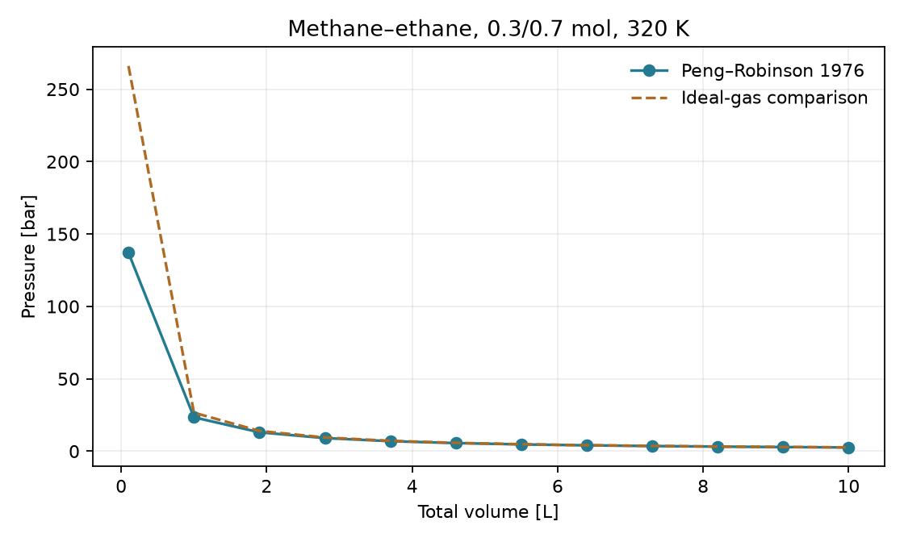

This tutorial goes from an empty Fortran project to a pressure calculation, then shows how to solve for volume and generate a pressure–volume curve. You need basic familiarity with variables and arrays, but not with the derivation of an equation of state (EOS).
The example uses a methane–ethane mixture. We will choose a model, supply component data in a consistent order, and ask it to predict a homogeneous fluid’s pressure. Finding how much liquid and vapor coexist is a different task, introduced in the phase-equilibrium guide.
yaeos is a modern Fortran library distributed as an
fpm package. Install a Fortran compiler,
fpm, Git, and the BLAS/LAPACK numerical libraries. Building the bundled
automatic-differentiation support also requires a C compiler. On Debian or
Ubuntu the compiler and system-library packages can be installed with:
sudo apt install gfortran gcc git libblas-dev liblapack-dev
Install fpm separately following its
installation guide, then create
a project:
fpm new first_yaeos --app
cd first_yaeos
Add the following dependency to fpm.toml. If a [dependencies] section
already exists, add the yaeos line there rather than creating a second section.
[dependencies]
yaeos = { git = "https://github.com/ipqa-research/yaeos" }
The first build downloads dependencies and can take longer than later builds.
For reproducible work, select a tested release tag or commit using fpm’s
tag or rev dependency options. Examples in these pages describe the API in
this documentation’s source revision; an older release may expose different
arguments.
If Fortran itself is new to you, the Fortran-lang learning resources explain programs, arrays, derived types, and procedure calls.
An EOS relates pressure, volume, temperature, and composition. The
Peng–Robinson 1976 model used here needs each component’s critical temperature
tc, critical pressure pc, and acentric factor omega.
A critical temperature and critical pressure locate the pure fluid’s critical point, where its liquid and vapor become indistinguishable. The acentric factor is a dimensionless descriptor of its vapor-pressure behavior. These are component data, not the temperature and pressure of the mixture you are about to calculate.
| Array position | Component | tc [K] |
pc [bar] |
omega [–] |
|---|---|---|---|---|
| 1 | Methane | 190.564 | 45.99 | 0.01142 |
| 2 | Ethane | 305.32 | 48.72 | 0.0995 |
These rounded values are suitable for a tutorial, not a substitute for selecting consistent data for a validated application. All arrays use this same component order.
We use 0.3 mol methane and 0.7 mol ethane, a total of 1 mol. At 320 K in a 1 L vessel, the ideal-gas equation would give bar. The EOS accounts for molecular interactions and will give a different pressure. The ideal-gas value is a useful scale check, not the expected EOS answer.
Replace app/main.f90 with this complete program:
program first_yaeos
use yaeos, only: pr, ArModel, PengRobinson76
implicit none
class(ArModel), allocatable :: model
real(pr) :: tc(2)
real(pr) :: pc(2)
real(pr) :: omega(2)
real(pr) :: n(2)
real(pr) :: temperature
real(pr) :: volume
real(pr) :: pressure
tc = [190.564_pr, 305.32_pr]
pc = [45.99_pr, 48.72_pr]
omega = [0.01142_pr, 0.0995_pr]
n = [0.3_pr, 0.7_pr]
temperature = 320.0_pr
volume = 1.0_pr
model = PengRobinson76(tc, pc, omega)
call model%pressure(n, volume, temperature, pressure)
write(*, '(A,F10.4)') "Pressure [bar]: ", pressure
end program first_yaeos
Run it from the project directory:
fpm run
Here is what the important lines do:
use yaeos, only: ... imports the names needed for this calculation.pr selects the library’s floating-point precision. The _pr suffix keeps
literal constants in that precision.class(ArModel), allocatable declares a variable that can hold different
residual-Helmholtz EOS model types. You do not have to implement that class.PengRobinson76(...) constructs and stores the component parameters. It
does not calculate equilibrium at a particular temperature or pressure.model%pressure(...) evaluates this model at the supplied state and writes
the answer into the last argument.For the rounded inputs above, the pressure is approximately 23.4215 bar, below the ideal-gas estimate of 26.61 bar. At this particular state, the net non-ideal correction lowers the pressure; this is not a rule that holds at every density. Small differences in component data or compiler arithmetic can change the last displayed digits.
This example has not fitted binary interaction parameters: the constructor’s default mixing rule uses zero binary interactions. That is a useful starting point, not evidence that those parameters are suitable for every mixture.
In an experiment you often know pressure and temperature, not volume. The
following insertable block goes before end program first_yaeos in the
previous program; it reuses model and n:
volume_example: block
real(pr) :: specified_pressure
real(pr) :: solved_volume
real(pr) :: checked_pressure
real(pr) :: temperature
specified_pressure = 10.0_pr
temperature = 320.0_pr
call model%volume(n, specified_pressure, temperature, solved_volume, &
root_type="stable")
if (solved_volume <= 0.0_pr) error stop "Volume calculation failed"
call model%pressure(n, solved_volume, temperature, checked_pressure)
write(*, '(A,F10.5)') "Total volume [L]: ", solved_volume
write(*, '(A,ES12.4)') "Pressure mismatch [bar]: ", &
checked_pressure - specified_pressure
end block volume_example
Re-evaluating pressure at the solved volume should reproduce the specified pressure to the solver’s numerical accuracy. This checks the inverse calculation, not the model’s agreement with experimental data. The example gives approximately 2.52678 L; in a local run the pressure mismatch was about bar, rather than exactly zero.
The root_type argument controls the volume branch. "liquid" requests the
dense branch, "vapor" the dilute branch, and "stable" the preferred
homogeneous root. These roots need not be different at every state. In
particular, a stable volume root does not by itself test whether a mixture
would separate into phases with different compositions. See
thermodynamics essentials.
An isotherm is a curve at constant temperature. Insert this block before the end of the first program to evaluate twelve volumes at 320 K:
pv_isotherm: block
real(pr) :: volume
real(pr) :: pressure
real(pr) :: first_volume
real(pr) :: last_volume
real(pr) :: step
integer :: i
integer, parameter :: n_points = 12
first_volume = 0.1_pr
last_volume = 10.0_pr
step = (last_volume - first_volume) / real(n_points - 1, pr)
write(*, '(A)') "Volume [L],Pressure [bar]"
do i = 0, n_points - 1
volume = first_volume + real(i, pr) * step
call model%pressure(n, volume, 320.0_pr, pressure)
write(*, '(F9.4,",",F12.6)') volume, pressure
end do
end block pv_isotherm
Plot the two columns in your preferred plotting tool. The volume range is deliberately broad: at large volumes the pressure approaches the ideal-gas behavior, whereas small volumes magnify intermolecular effects. An arbitrary small volume may be outside a model’s physical domain; check before extending the sweep toward zero.
Some rows of the calculated table are:
| Total volume [L] | Pressure [bar] |
|---|---|
| 0.1 | 137.063211 |
| 1.0 | 23.421450 |
| 3.7 | 6.940690 |
| 10.0 | 2.625777 |

The markers are the twelve states evaluated by the program; connecting lines are a guide to the eye. The dashed curve compares the ideal-gas pressure at those same volumes and temperature.
This is an EOS curve for proposed homogeneous states, not a phase-equilibrium envelope. At other temperatures, a model curve can pass through unstable states; those points do not describe a physically stable, uniform sample.
A derivative tells you how a property changes when an input changes. For
example, dPdV is the slope of pressure with respect to total volume while
temperature and mole amounts stay fixed. This insertable block requests that
slope as well as pressure:
derivative_example: block
real(pr) :: pressure
real(pr) :: slope
call model%pressure(n, 1.0_pr, 320.0_pr, pressure, dPdV=slope)
write(*, '(A,ES12.4)') "dP/dV [bar/L]: ", slope
end block derivative_example
Optional keyword outputs let you ask for the quantities you need without implementing numerical differentiation yourself. For normal stable fluid states this slope is negative: expansion lowers the pressure. Derivatives near singularities or critical states require more care.
Use bar, litres, kelvin, and moles unless a model-specific parameter is documented otherwise. The library uses . Extensive energies are in bar·L, and .
Here the amounts sum to one mole, so the numerical total volume equals the numerical molar volume. If you multiply every amount by ten, multiply total volume by ten to describe the same density and pressure. Do not assume this one-mole coincidence holds for arbitrary input amounts. See the units and composition guide for examples and conversion checks.
| Symptom | First things to check |
|---|---|
fpm cannot fetch a dependency |
Network access, Git availability, and the dependency revision |
Linker reports missing blas or lapack |
Installed development libraries and library-search configuration |
| Compiler does not recognize a keyword argument | Installed yaeos version versus this documentation’s API |
| Implausible pressure or density | K versus °C, bar versus Pa, total versus molar volume, and component ordering |
| A volume calculation fails or returns a nonphysical value | Input domain, requested root, parameter validity, and solver diagnostics |
Do not fix a unit or parameter error by changing solver tolerances. Numerical convergence and physical accuracy are separate questions.